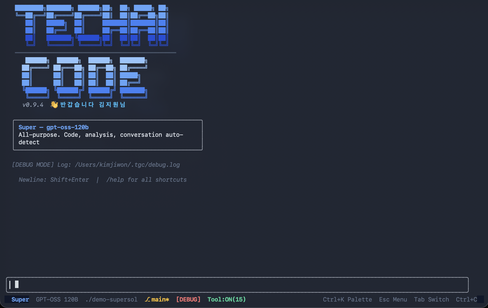
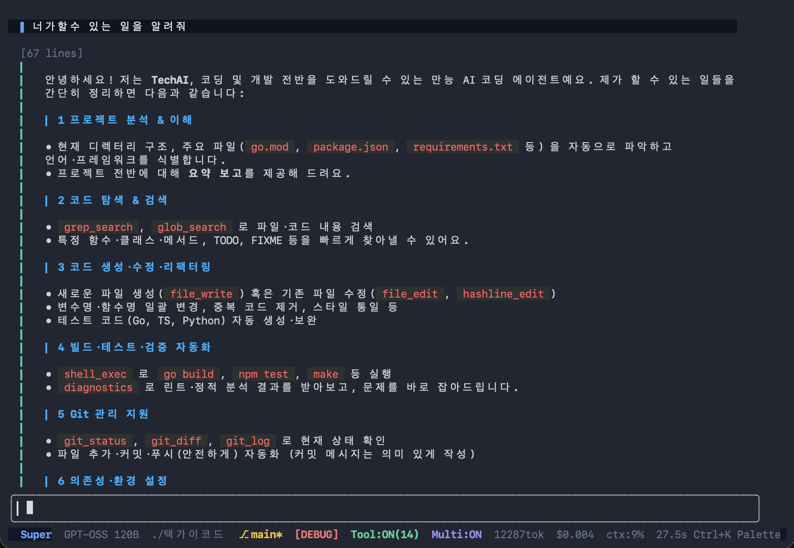
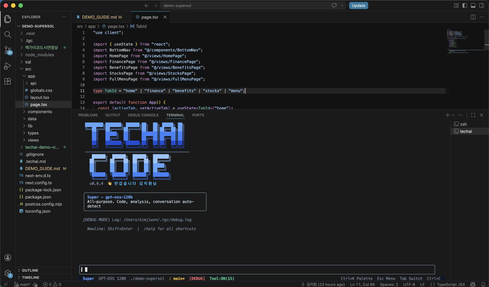
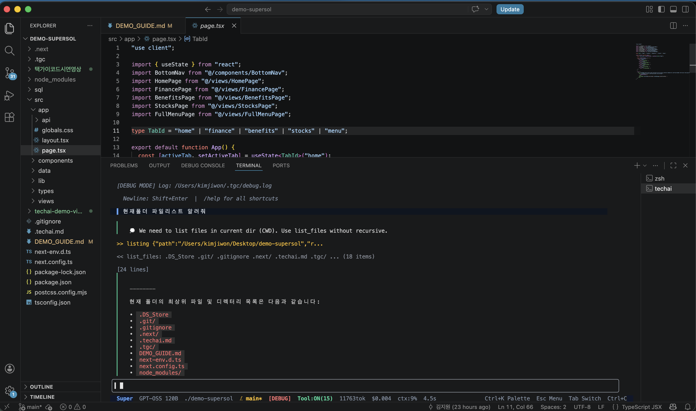

████████╗███████╗ ██████╗██╗ ██╗ █████╗ ██╗
██╔══╝██╔════╝██╔════╝██║ ██║██╔══██╗██║
██║ █████╗ ██║ ███████║███████║██║
██║ ██╔══╝ ██║ ██╔══██║██╔══██║██║
██║ ███████╗╚██████╗██║ ██║██║ ██║██║
╚═╝ ╚══════╝ ╚═════╝╚═╝ ╚═╝╚═╝ ╚═╝╚═╝ CODE
Single Binary · Any Model · Any Network
Claude Code, Codex — Node.js 필수
Aider — Python 필수
OpenCode — Go 빌드 환경 필요
새 PC마다 설치·버전 충돌 대응 필수
특정 제공업체 모델에 고정됩니다. 사내 보안 정책으로 외부 LLM을 쓸 수 없는 경우 대안이 없습니다.
인터넷 전용 설계입니다. 온프레미스 배포나 폐쇄망 환경에서는 사용 자체가 불가능합니다.
~25MB, 외부 의존성 제로. USB에 복사해 어디서든 즉시 실행 가능합니다.
OpenAI-compatible API면 모두 연결 가능. config 한 줄로 사내 LLM, Gemma, Qwen 등으로 교체합니다.
macOS (ARM · Intel) · Windows · Linux
단일 바이너리로 전 플랫폼 동일 실행
메인 에이전트 + 서브 에이전트 2개 구성
병렬·다중 처리로 코드 품질 향상
Spring, React, SQL, BXM 등 전문 레퍼런스 바이너리 내장. 벡터 DB 없이 ~1ms 즉시 주입합니다.
MCP 서버만 구축되면 즉시 연동 가능
Jira, Wiki, CI/CD 등 사내 시스템을 AI에 직접 연결

screenshot1.png
screenshot3.png
screenshot2.png터미널이 붙어있는 모든 IDE에서 사용 가능합니다

screenshot4.png배치 처리, Bean, Config, DBIO
트랜잭션, 예외 처리, Service
Core · MVC · Security · Data JPA
Boot Ops · Test · JEUS WAS
Hooks · App Router · Pages Router
TanStack Query · Zustand · Hook Form
Oracle · MySQL · PostgreSQL · Tibero
Prisma · Drizzle · Supabase
Bash 스크립팅 · Git · Linux
macOS · Windows · 크로스플랫폼
Go · TypeScript · FastAPI · Vue
ESLint · Vite · TDD · 코드 리뷰 · 보안
사용자 지식 문서 추가 가능 (.tgc/knowledge/) | 81개 기본 내장 | 프로젝트별 필요한 팩만 ON/OFF 선택 | 벡터 DB 없이 ~1ms 검색
AI가 파일을 수정하기 전 자동으로 백업합니다. /undo로 언제든 즉시 복구 가능합니다.
ExactMatch → LineTrimmed → IndentFlex → Levenshtein(95%) 정밀 매칭으로 오편집을 방지합니다.
API 키, 비밀번호가 코드에 포함되면 자동 감지 후 경고합니다. 민감 정보 유출을 차단합니다.
rm -rf /, sudo 등 위험 명령은 자동 차단. 고위험 명령은 실행 전 경고합니다.
force push, --no-verify 등 위험 Git 명령을 감지하고 경고합니다. 코드 손실을 방지합니다.
90% 도달 시 자동 압축. 세션은 SQLite에 영속화되어 재시작 후에도 완전 복원됩니다.
* AI도 실수합니다. 최종 확인은 사람의 몫입니다 :)
이 컴퓨터에서 바로 시연합니다
동일한 프로그램, 동일한 모델
이미 사내망에 세팅 완료
같은 도구, 같은 UX, 다른 네트워크
사내망에서도 지금 바로 사용 가능합니다
SuperSOL 데모 프로젝트 · GPT-OSS-120B · 시나리오 3개
프로젝트 전체를 검색해서 대상 파일을 찾고, 수정까지 자동 수행.
멀티 에이전트로 여러 파일 병렬 탐색도 가능합니다.
81개 기본 내장 + 사용자 문서 추가 가능.
프로젝트에 필요한 팩만 ON/OFF해서 컨텍스트에 주입.
단순 UI 수정부터 코드 분석까지 오픈소스 모델만으로 실무 활용 가능.
모델 업그레이드 시 성능이 자동으로 향상됩니다.
외부 프론티어 모델만큼은 아니지만,
사내 모델이 발전하면 코드 수정 없이 즉시 반영.
최선의 성능으로 동작하게 설계했습니다.
config.yaml 한 줄 수정으로 모델 교체 → 도구 전체가 자동으로 업그레이드
2026년 4월 22일 기준 · 사내망 모델 중심 — 모델 교체만으로 성능 향상 가능
| # | 모델 | AA 지능지수 | Terminal-Bench | 비고 |
|---|---|---|---|---|
| 1 | Gemma 4 31B OPEN ↑ | 39 | 36% | 오픈 최강. 교체 예정 |
| 2 | GPT-OSS-120B 현재 Super | 33 | 24% | 현재 사내망 메인 모델 |
| 3 | Gemma 4 26B MoE OPEN ↑ | 31 | 14% | 300+ tok/s. Dev 교체 예정 |
| 4 | Qwen3-Coder-30B 현재 Dev | 20 | 미공개 | 현재 사내망 서브 모델 |
Super: GPT-OSS-120B(AA:33) → Gemma 4 31B(AA:39) +18%
Dev: Qwen3-Coder-30B(AA:20) → Gemma 4 26B MoE(AA:31) +55%
택가이웹 초기 버전은 GPT-OSS-120B + Gemini 무료 버전만으로 제작했습니다. 모델이 좋아지면 도구도 자동으로 좋아집니다.
현재 GPT-OSS-120B + Qwen3-Coder-30B → Gemma 4 31B + Gemma 4 26B MoE
SUPER (메인 에이전트) — AA 지능지수
DEV (서브 에이전트) — AA 지능지수
Terminal-Bench Hard (코딩 벤치마크)
코드 변경 없이 config.yaml 한 줄 수정으로 즉시 적용
CLI, 멀티 에이전트, MCP, Knowledge Packs, auto-prefetch, 온프레미스 빌드 완성
사용자 의견 취합 후 최종 개선, 정식 출시 예정
단일 앱으로 웹 + 코드 편집을 통합. GUI 기반 올인원 개발 환경 제작 예정
오픈소스 활용, 필수 기능만 결합한 단일 파일 IDE 제작 예정
직접 기능을 추가하고 커스터마이징할 수 있습니다. 사내 요구사항에 맞춰 지속적으로 발전시킬 수 있습니다.
LLM이 발전하면 config 한 줄만 바꾸면 도구 전체가 자동으로 진화합니다. Gemma 4처럼 소형 고성능 모델이 나오면 즉시 교체해 더 빠르고 더 좋은 성능으로 쓸 수 있습니다.
████████╗███████╗ ██████╗██╗ ██╗ █████╗ ██╗
██╔══╝██╔════╝██╔════╝██║ ██║██╔══██╗██║
██║ █████╗ ██║ ███████║███████║██║
██║ ██╔══╝ ██║ ██╔══██║██╔══██║██║
██║ ███████╗╚██████╗██║ ██║██║ ██║██║
╚═╝ ╚══════╝ ╚═════╝╚═╝ ╚═╝╚═╝ ╚═╝╚═╝ CODE
AI Coding, Anywhere.